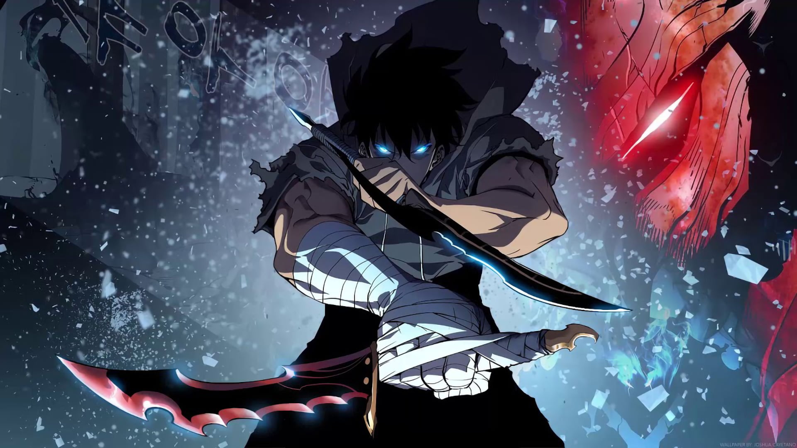

SOLO LEVELING
MANHWA
After "the Gate" connected the real world with a realm of magic and monsters, ordinary people became "Hunters" with superhuman powers. Sung Jin-Woo, known as the "World's Weakest," hunts monsters to pay for his mother's medical bills. His life changes when he wakes up in a hospital to find a mysterious "Quest Log" that could transform him into a fearsome Hunter.